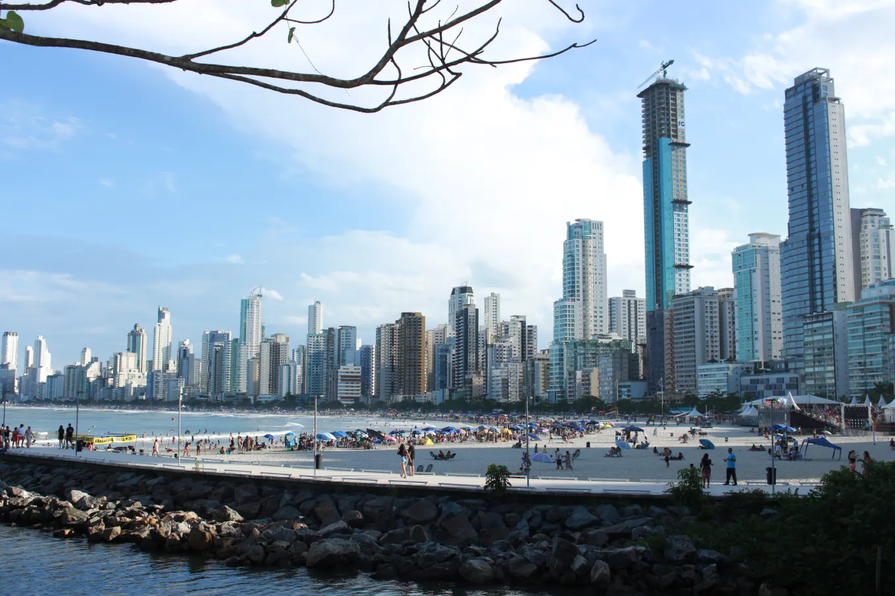
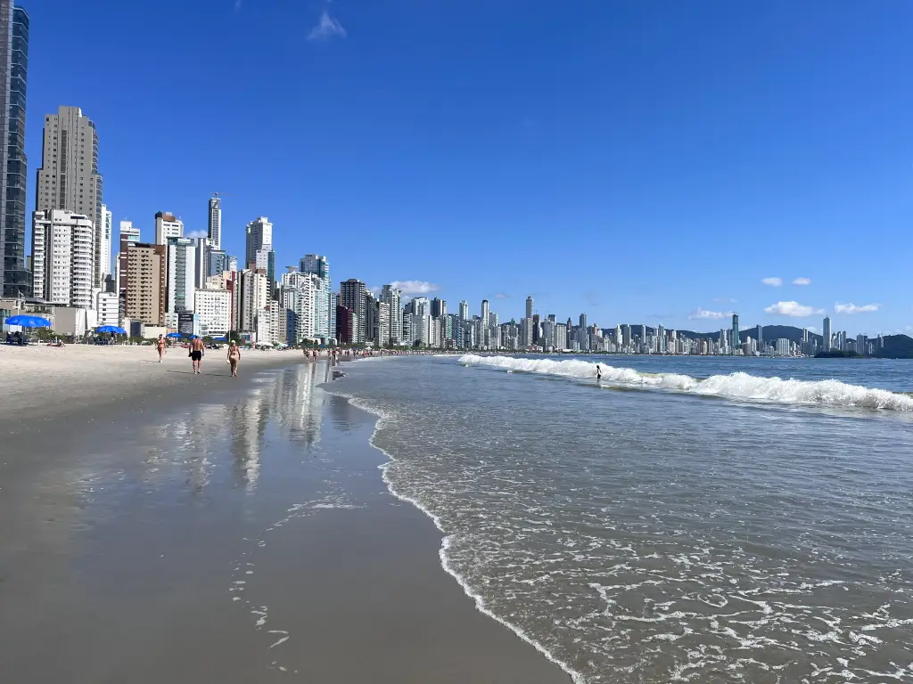
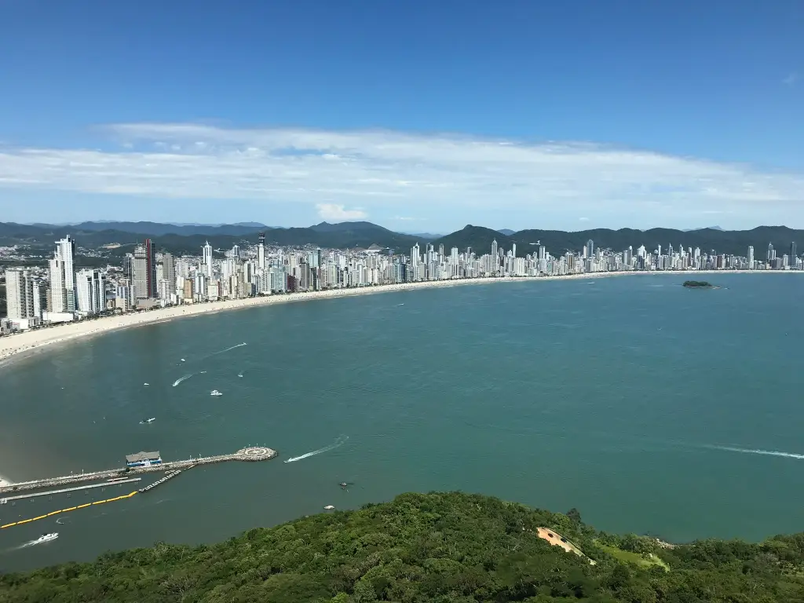

Conheça Balneário Camboriú
Balneário Camboriú é conhecida como a "Dubai brasileira", sendo um dos destinos turísticos mais procurados do Brasil.
Com suas praias paradisíacas, vida noturna vibrante e atrações para toda a família, a cidade é o lugar perfeito para relaxar e se divertir.
Nesse projeto focado em auxiliar o turismo em Balneário Camboriú você vai encontrar o que a cidade tem de melhor a oferecer!
Imagens de Balneário Camboriú


